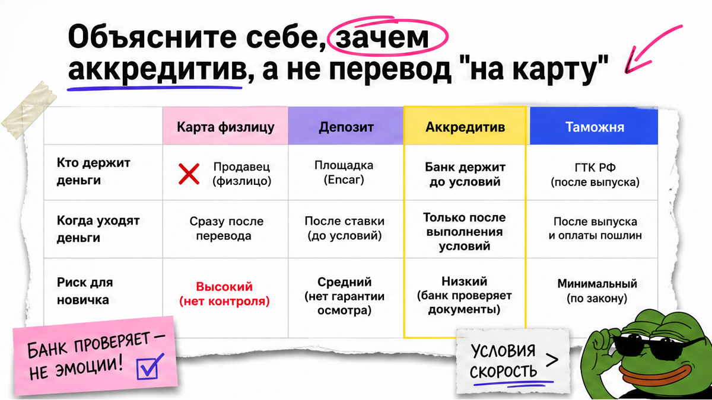
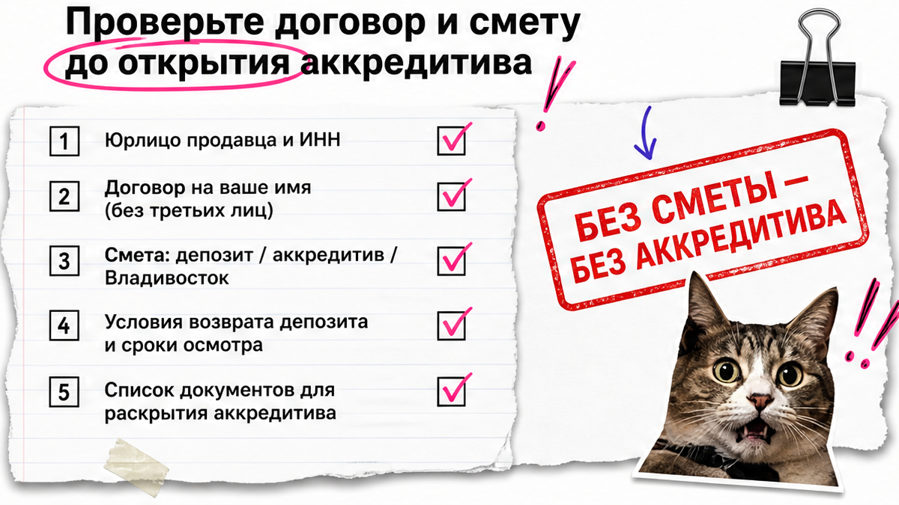
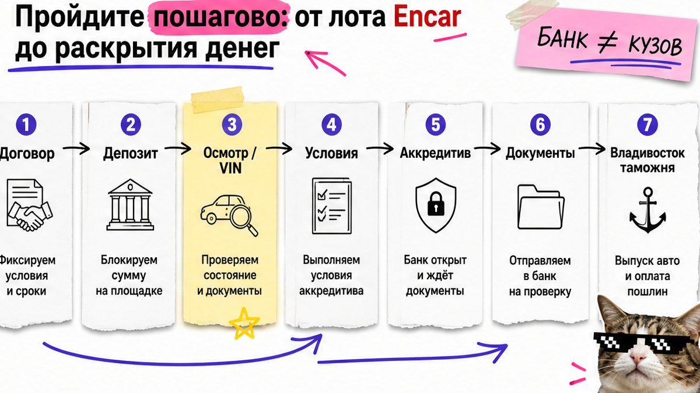

Менеджер из Instagram давит: "скидка только сегодня, перевод на карту сестры, VIN пришлю позже". Знакомо? Страх потерять и машину, и деньги при заказе авто из Кореи – нормальный. Аккредитив тут не "банковский квест для юристов", а заморозка суммы до бумаг. Ниже – чек-лист до первого перевода: что в договоре, что платить через банк, а что во Владивостоке, и когда сказать "стоп".
Если коротко: Аккредитив – банк держит основную сумму и отдаёт продавцу только после заранее согласованных документов. Депозит после договора и платежи на таможне – отдельные этапы, не "всё сразу на карту". Банк не смотрит кузов и ДТП: сначала осмотр и VIN, потом раскрытие. Нет юрлица, договора и списка условий – нет перевода.
Мы в Авто-Сейлс во Владивостоке видим одну ошибку: человек путает три платежа и платит "как скажет менеджер". На практике схема 2026 проще: договор → небольшой возвратный депозит → осмотр лота → основная сумма через аккредитив → таможня и утильсбор после прибытия в порт.
Тут важный момент. Крупные импортёры уже рекламируют аккредитив (часто через Сбер) как норму основной оплаты. Но "аккредитив без точного списка бумаг" почти как предоплата: банк сверит только то, что вы заранее вписали в условия.

На пальцах: перевод на карту – отдали деньги и надеетесь на честность. Аккредитив – банк как камера хранения: сумма лежит у него, продавцу (или импортёру) её выдают, когда принесут нужные документы. Не "когда машина всем понравится", а когда выполнены условия из текста аккредитива.
Например, Иван из Новосибирска почти отправил крупную сумму Instagram-подборщику. Договор на "сестру", VIN "позже", скидка "только сегодня". Стоп: основная сумма – только через банк после осмотра, не на карту частника.
Делать: формулируйте: "деньги замораживает банк, отдаёт по документам". Не делать: путать это с "безопасной сделкой" для купли-продажи авто внутри РФ на Госуслугах – у импорта из Кореи другой контур. Спросите, какой именно банковский продукт открывают.
| Способ оплаты | Кто держит деньги | Когда уходят | Для новичка |
|---|---|---|---|
| Карта / перевод физлицу | Сразу у получателя | Мгновенно | Высокий риск; типичный стоп |
| Депозит по договору | У компании (часто ~100 000 ₽) | После договора; смотрите возврат до брони | Норма рынка, не вся цена авто |
| Аккредитив | Банк на спецсчёте | После документов из ваших условий | Основная сумма за авто и расходы по Корее |
| Таможня / утиль во Владивостоке | Госструктуры / брокер по квитанциям | После прибытия авто | Отдельно от аккредитива; на своё имя |
Схема оплаты под заказ:
Договор с юрлицом → Депозит (условия возврата) → Осмотр / VIN → Открытие аккредитива → Перевод на счёт аккредитива → Документы → Раскрытие банком → Владивосток: таможня и утиль

Банк не эксперт по кузову. Он не "спасёт" от битой машины, если в условиях не было отчёта осмотра и VIN. Сначала бумаги сделки, потом клиент-банк.
До любого платежа получите проект договора и смету: что входит в цену, что идёт через аккредитив, что отдельно (логистика по РФ, таможня, утильсбор, брокер). В тексте аккредитива фиксируют покрытие сумм и отдельные прямые платежи вроде предоплаты.
Делать: занесите в табличку "что плачу когда". Не делать: открывать аккредитив "на словах менеджера" без списка условий раскрытия.

Рабочий порядок нормальных импортёров. Комиссии банка у всех разные: в обзорах ВЭД 2026 часто ориентир открытия порядка 0,15–0,30% с минимумом в тысячах рублей; точный тариф – только у банка сделки.
Делать: идти по порядку "осмотр → условия → банк". Не делать: пропускать диагностику ради ощущения "меня защищает банк" – банк смотрит документы, не ЛКП.
Типичная ошибка – путать уверенный тон продавца с безопасностью. В community (в том числе на Drive2) повторяется схема: крупная предоплата частному лицу, отсрочки, потом тишина.
У импортёров нормален возвратный депозит порядка 100 000 ₽ после договора. Полная предоплата незнакомцу без договора – красный флаг. Делать: при флаге ставьте оплату на паузу. Не делать: "чуть-чуть рискнуть", если нет VIN и юрлица.
Нужен расчёт под бюджет и понятная схема оплаты – откройте каталог avto-sales125.ru. Форм на странице нет: детали удобнее уточнить в Telegram @avtosales125.
Скопируйте в заметки. Если пункта нет – перевод рано.
Критерий результата: у вас письменный список условий раскрытия денег и стоп-сигналы. Вы не платите 100% до договора с юрлицом, фиксации VIN и понятной схемы "банк / депозит / таможня". Это успех гайда – не "знание термина", а готовность к первому безопасному шагу.
Пройти чек-лист с командой подбора – в каталоге Авто-Сейлс: варианты из Кореи, Японии и Китая без форм на блоге.
Материал проверен: редакция Авто-Сейлс (эксперты по авто под заказ из Японии, Кореи и Китая).
Достоверность: факты сверены с открытыми материалами импортёров и банков по аккредитиву 2025–2026 (порядок оплаты Encar Russia, пояснения Сбера по заморозке суммы, чек-листы условий раскрытия, предупреждения о рисках предоплаты) и практикой сопровождения заказов через Владивосток; актуальные расчёты и подбор – в каталоге.
Депозит – небольшой платёж компании после договора (часто порядка 100 000 ₽) с условиями возврата до брони. Аккредитив – основная сумма на банковском счёте: банк отдаёт её только по документам из ваших условий. Делать: платите их как разные этапы. Не делать: смешивать в один перевод "на карту".
Зависит от договора и текста аккредитива. В публичных материалах банков по импорту авто подчёркивают: при срыве и невыполнении условий сумма может вернуться покупателю. Делать: до открытия зафиксируйте порядок возврата. Не делать: надеяться на устные обещания.
После прибытия авто во Владивосток – по официальным квитанциям, обычно на ваше имя. Это не часть "перевода менеджеру до покупки". Делать: закладывайте эти платежи отдельно в бюджет. Не делать: отдавать "таможню заранее" на личную карту.
Нет. Безопасная сделка для купли-продажи внутри РФ и оплата заказа из Кореи через аккредитив у импортёра – разные контуры. Делать: уточните название продукта и банк. Не делать: открывать "что попало" по скрину из чата.
Нет. Банк сверяет документы из условий. Осмотр, VIN и история – ваша зона до раскрытия. Делать: сначала отчёт осмотра, потом аккредитив. Не делать: пропускать диагностику "потому что банк защищает".
Короткая фраза: "основную сумму – только через аккредитив после осмотра и договора с юрлицом". Давление и чужие реквизиты – стоп. Делать: держитесь чек-листа. Не делать: торговаться скидкой ценой безопасности оплаты.